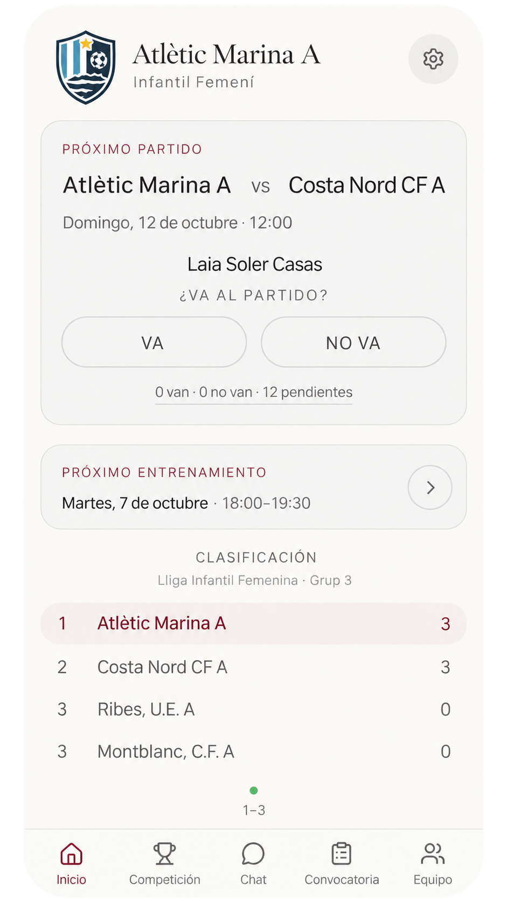
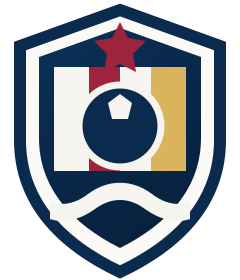
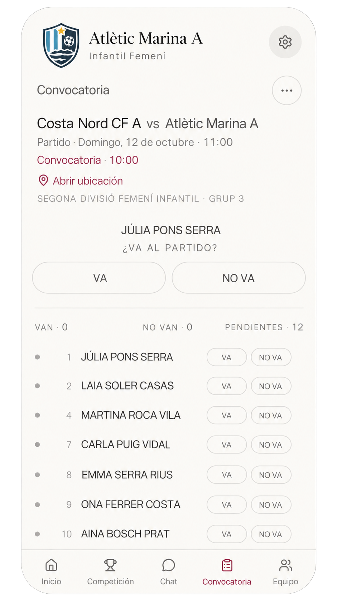
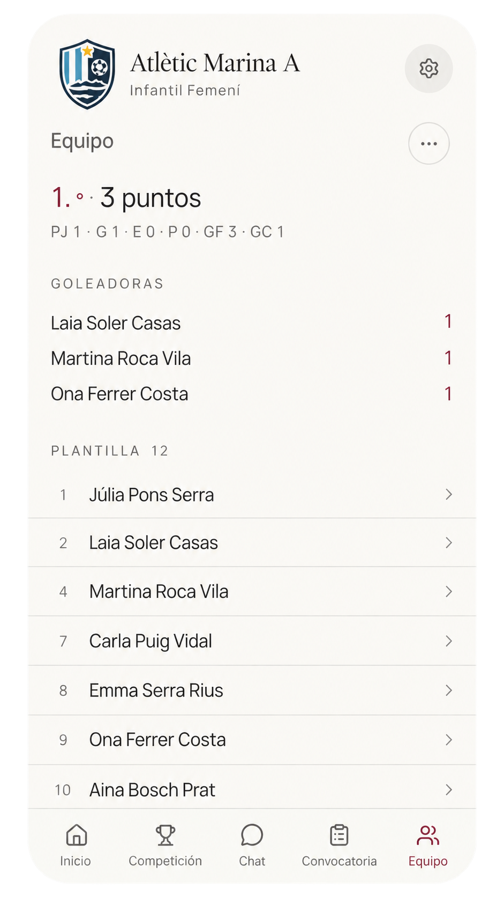
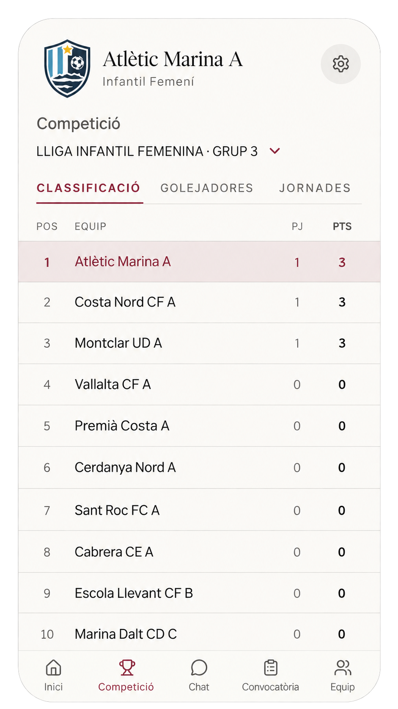

Familias vinculadas
Uno o varios tutores pueden gestionar la información del menor.
Partidos, entrenamientos, convocatorias, comunicación y competición en un solo lugar. Para equipos de adultos y de base.


MonEquip no se presenta como una plataforma genérica. Es completamente personalizable: tu nombre, tu escudo y tus colores. Todo pensado para que jugadores, familias y staff la reconozcan como la app de su equipo desde el primer día.
No todos los equipos funcionan igual. Cuando todos son adultos, cada jugador gestiona lo suyo. Cuando hay menores, la familia entra en el flujo con permisos y privacidad específicos.
Convocatorias, entrenamientos, chat, plantilla y competición. Directo entre jugadores y staff, sin capas familiares que no hacen falta.


Lanza la convocatoria con antelación, recibe respuestas claras y recuerda solo a quienes siguen pendientes.
Configura cuándo se publica la convocatoria y mantén la lógica para los siguientes partidos.
La asistencia habitual se da por hecha. Solo se comunica la ausencia cuando hace falta.
Consulta jornadas, resultados, clasificación, goleadores y fichas de partido desde el mismo entorno en el que organizas el equipo.
La disponibilidad y actualización automática de datos puede variar según la competición y el deporte.
Uno o varios tutores pueden gestionar la información del menor.
El entrenador puede decidir quién escribe y quién solo recibe información.
Abre la conversación durante 12 o 24 horas y vuelve a cerrarla después.
Los datos del equipo no se hacen públicos. Cada perfil ve solo lo que le corresponde y la información de los menores tiene permisos más restrictivos.
Cuéntanos qué equipo tienes. Hablamos contigo, te enseñamos cómo funciona y vemos cómo ponerlo en marcha con tu nombre, tu escudo y tus colores.
MonEquip es una web app instalable: una página web que puedes configurar como una app tradicional. La abres desde tu navegador y la añades a la pantalla de inicio para entrar después desde su propio icono: el escudo de tu equipo.
Está pensado para deportes colectivos. Su estructura sirve para fútbol, fútbol sala, baloncesto, voleibol, hockey y otros deportes de equipo. Algunas funciones de competición pueden variar según el deporte y la fuente de datos disponible.
Sí. En adultos los jugadores gestionan directamente sus convocatorias, entrenamientos y comunicación. Las funciones de familias y menores simplemente no aparecen cuando no hacen falta.
Un jugador menor puede tener uno o varios tutores vinculados. Los responsables autorizados pueden responder por él y recibir la información que corresponda. Los datos del equipo no se hacen públicos y cada perfil ve solo lo que necesita; en menores, los permisos son más restrictivos y su teléfono no se muestra al resto de miembros.
No. MonEquip es una web app instalable: una página web que puedes configurar como una app tradicional. La abres desde tu navegador y la añades a la pantalla de inicio para acceder después desde su propio icono, que puede ser el escudo de tu equipo.